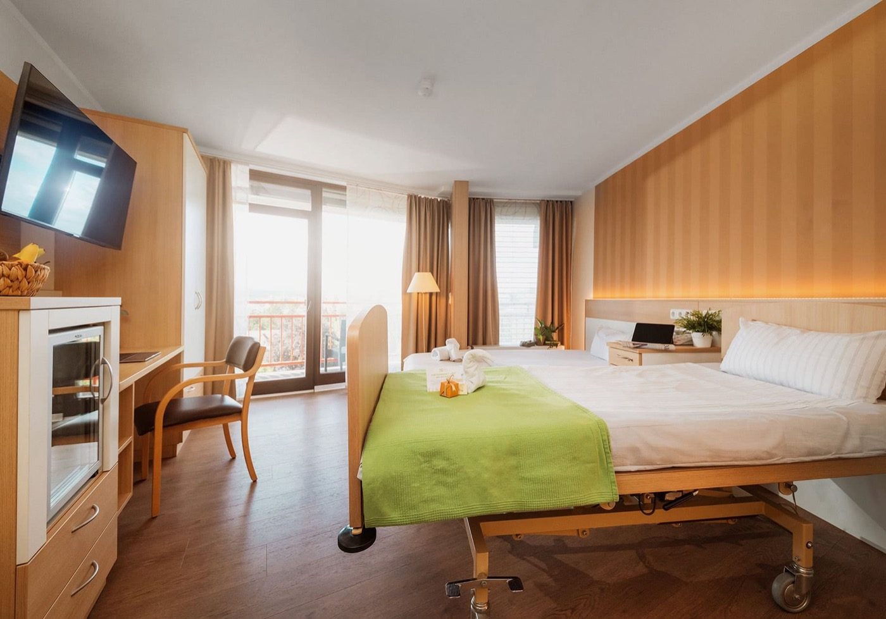

Aus Quellen wird planbare Belegung.

Der Trichter

Fälle
Ein Eingang für alle Kanäle · Telefon, E-Mail, Website, Zuweiser, Recare, Premium.
Fall-Board · Karte antippen zum Öffnen.
Alle Anfragen aus allen Kanälen — an einem Ort gebündelt, klar zugeteilt, zügig beantwortet.

In Reha
Patienten aktuell in Behandlung — Erfolg & Wirtschaftlichkeit auf einen Blick.

Netzwerk
Zuweiser-Netzwerk · zuerst Kategorien, dann Kontakte und nächste Aktion.

Kontakte vor dem Fall.
Jeder Kontakt ist eingestuft und läuft automatisch in seiner Strecke. Wird er konkret, wird er zum Fall.

Aktive Ansprache nur mit dokumentierter Einwilligung.
Auswertung
Auswertung · Quellen, Engpässe, Team und Fachbereiche.
Von Anfrage zu Aufnahme
Woher kommen Patienten?
Warum gehen Fälle verloren?
Wer führt wie viele Fälle?
Wo stockt es?
Welche Fachbereiche?
Nichts geht unter
Neue Anfragen, offene Fristen und blockierte Fälle werden sichtbar, bevor sie im Alltag untergehen.
Team steuern
Die Leitung sieht, wo Arbeit liegt: Koordination, Belegung, Abrechnung oder Recovery Manager.
Aus Verlusten lernen
Verlustgründe und Blocker werden zur Management-Information: Wartezeit, Kosten, Unterlagen, Rückmeldung, Kapazität.
Kontaktfreigabe
Einwilligungen, Angehörigenkontakt und aktive Ansprache werden nicht versteckt, sondern als Systemstatus geführt.
Konzept
Eine Drehscheibe für Privatpatienten.
Die Software verbindet Markt, Klinikalltag und Belegung. Sie macht sichtbar, wo Patienten entstehen, wer sie führt und was aus jedem Fall gelernt wird.
↺ Gelerntes fließt zurück in die Quellen.
Mehr Fälle
Alle Quellen laufen in einen Eingang. Zuweiser, Direktanfragen, Altpatienten und Premium-Kanäle werden nicht getrennt gedacht.
Verlässlichkeit
Jeder Fall hat eine zuständige Person, einen nächsten Schritt und eine Frist. Verlustgründe sind Pflicht, damit nichts still verschwindet.
Planbarkeit
Der Belegungsvorlauf wird sichtbar und steigt mit jeder geplanten Aufnahme. Rückmeldungen fließen in Quellen und Prozesse zurück.
B2B · B2C × vor · in · nach der Reha. Jede Zelle ist ein Bereich der Software.
Tippen öffnet den jeweiligen Bereich · aktiv · im Aufbau · geplant · synthetische Demo-Daten.
Prozesse / SOPs · interner Hilfe- und Nachschlagebereich.
Aufnahmeprozess
Vom ersten Signal bis zur sauberen Fallübergabe: eine einfache Kette, die Verantwortung, Unterlagen und Fristen sichtbar hält.
Beziehungs-SOP
Zuweiser und Altpatienten werden nicht nebenbei gepflegt, sondern als strategische Aufgaben mit sauberer Freigabe geführt.
Pfad: Anfrage bis Aufnahme
Pfad: Problem lösen
Erstreaktion
Rückruf, Unterlagenanforderung und erste Einordnung ohne Medienbruch.
Unterlagen
Entlassbrief, Befunde, Versicherungsdaten und Kostenzusage als klare Checkliste.
Kontaktfreigabe
Einwilligung, Zweckbindung und Sperrstatus werden als sichtbarer Systemstatus geführt.
Zuweiser-Service
Rückmeldung, Dank, Ansprechpartner und klare Erwartungen je Partnergruppe.
Was tun, wenn Unterlagen fehlen?
Im Fall als Blocker markieren, passende Unterlagen-Vorlage nutzen und Frist setzen. Der Fall bleibt sichtbar, bis die Checkliste vollständig ist.
Wann darf aktiv kontaktiert werden?
Nur wenn Einwilligung und Zweck dokumentiert sind. Ohne Kontaktfreigabe bleibt der Kontakt gesperrt und es wird keine Ansprache ausgelöst.
Wer entscheidet bei Kostenfragen?
Abrechnung übernimmt PKV, Beihilfe und Selbstzahler-Klärung. Der Fall bleibt in Klärung, bis Kostenstatus eindeutig ist.
Wie wird aus einem Verlust gelernt?
Verlustgrund verpflichtend dokumentieren. Die Auswertung zeigt später, ob Wartezeit, Kapazität, Kosten oder Unterlagen wiederholt bremsen.
S. Koordination
Erstreaktion, Angehörige, Unterlagenanforderung, Fristen.
M. Belegung
Bett, Fachbereich, Aufnahmedatum, Transportabstimmung.
Patienten-OS Support
Login, Bedienung, Datenfehler, technische Rückfragen.
Unterlagen anfordern
Freundliche Checkliste: Entlassbrief, Befunde, Versicherungsdaten, Kostenzusage.
Status-Rückmeldung
Kurze Rückmeldung zu Übernahmefähigkeit, nächstem Schritt und fester Ansprechperson.
Nachsorge vormerken
Nur bei Kontaktfreigabe: freiwillige Wiedervorlage, Jahres-Check oder SalutoCare-Nachsorge.